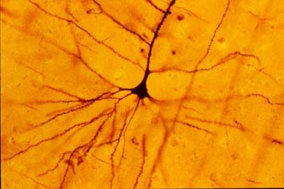

Ⅰ. 생활 속 문제를 데이터로 표현하기
1-1. 두 스위치의 비밀
1차시 · 약 50분 · 준비물: 웹 브라우저, 메모 도구, 파이썬 3 실행 환경
01 · 문제 만나기 · 5분
아래에서 켠 불을, 위에서 끄려면?
늦은 저녁, 어두운 계단 앞에 서 있습니다. 아래층에서 불을 켜고 위층까지 올라왔습니다. 불을 끄려고 다시 내려가야 한다면 불편하겠지요.
계단 아래와 위에 스위치를 하나씩 두고,
어느 쪽에서도 같은 전등을 켜고 끌 수 있게 해봅시다.
우리는 먼저 조명의 동작을 관찰합니다. 이 기록을 바탕으로, 앞으로 같은 동작을 학습하는 신경망을 만들 것입니다.
02 · 실험 준비 · 5분
스위치의 ‘위치’와 전등의 ‘상태’를 구분해요.
- 스위치 위치: 각각 ‘아래쪽’ 또는 ‘위쪽’입니다.
- 전등 상태: ‘꺼짐’ 또는 ‘켜짐’입니다.
- 시작 상태: 두 스위치가 모두 아래쪽이면 전등이 꺼져 있습니다.
오늘의 목표: 네 가지 조합을 빠짐없이 관찰하고, 스위치를 하나 움직였을 때의 변화를 말로 설명할 수 있습니다.
03 · 스위치 실험 · 12분
누르기 전에 다음 전등 상태를 예상하세요.
- 시작 상태에서 ‘현재 조합 기록’을 누릅니다.
- 아래층 스위치만 움직입니다. 전등 상태를 확인하고 기록합니다.
- 이어서 위층 스위치만 움직입니다. 다시 확인하고 기록합니다.
- 아래층 스위치를 한 번 더 움직여 남은 조합을 기록합니다.
한 명은 예상과 조작을, 다른 한 명은 관찰과 설명을 맡습니다. 네 조합을 모은 뒤 역할을 바꾸어 실험해보세요.
네 가지 조합을 빠짐없이 살펴보세요.
종이에 아래/아래, 아래/위, 위/아래, 위/위 네 조합을 적으세요. ‘둘 다 아래일 때 꺼짐, 스위치 하나를 움직일 때마다 전등 상태가 바뀜’이라는 동작을 따라 각 결과를 기록합니다.
04 · 관찰 설명하기 · 10분
동작을 한 문장으로 설명해봅시다.
- 전등이 켜진 두 조합에는 어떤 공통점이 있나요?
- 전등이 꺼진 두 조합에는 어떤 공통점이 있나요?
- 어느 상태에서든 스위치 하나만 움직이면 무엇이 바뀌나요?
나의 설명: “두 스위치의 위치가 __________이면 전등이 켜진다.”
설명을 작성한 뒤 확인하기
이 모형에서는 두 스위치의 위치가 서로 다르면 켜지고, 같으면 꺼집니다. 어느 한 스위치만 움직이면 전등 상태가 반대로 바뀝니다.
스위치 하나의 위치만으로는 전등 상태를 결정할 수 없습니다. 두 위치를 함께 살펴봐야 합니다.
05 · 기록 코드 실행 · 10분
관찰 결과를 파이썬으로 남겨봅시다.
아래 코드를 파이썬 3 편집기에 복사해 실행하세요. 각 질문에 실험에서 확인한 ‘켜짐’ 또는 ‘꺼짐’을 입력하고 Enter를 누릅니다. 별도 라이브러리는 필요하지 않습니다.
이 코드는 여러분의 관찰을 입력받아 출력하는 기록 도구입니다. 전등 상태를 계산하거나 학습하는 코드는 이후에 직접 만듭니다.
관찰 기록 코드 다운로드 (.py)# 계단 조명을 관찰한 결과를 기록합니다. 외부 라이브러리는 필요 없습니다.
positions = [("아래", "아래"), ("아래", "위"), ("위", "아래"), ("위", "위")]
observations = []
for lower, upper in positions:
lamp = input(f"아래층 {lower} / 위층 {upper} → 전등 상태(켜짐/꺼짐): ")
while lamp not in ("켜짐", "꺼짐"):
lamp = input("켜짐 또는 꺼짐으로 입력하세요: ")
observations.append([lower, upper, lamp])
print("\n아래층 | 위층 | 전등")
for lower, upper, lamp in observations:
print(f"{lower} | {upper} | {lamp}")
코드의 역할을 세 덩어리로 읽어보세요.
positions: 관찰할 네 가지 스위치 조합입니다.input과append: 내가 확인한 상태를 입력받고 기록에 추가합니다.- 마지막
for문: 모아둔 네 기록을 차례로 출력합니다.
입력을 마치면 출력된 기록을 웹 실험의 표와 대조하세요. 서로 다르다면 해당 조합을 다시 관찰합니다.
마지막 확인
아래층 스위치는 위쪽, 위층 스위치는 아래쪽일 때 불이 켜져 있습니다. 위층 스위치만 위쪽으로 움직이면 전등은 어떻게 될까요? 두 스위치의 위치를 함께 설명해보세요.
06 · 확인과 정리 · 8분
오늘은 동작을 관찰하고 설명했습니다.
- 두 스위치의 위치와 전등 상태를 구분했습니다.
- 네 조합을 기록하고, 스위치 하나를 움직일 때의 변화를 설명했습니다.
- 관찰 기록을 바탕으로 같은 동작을 학습하는 신경망을 만드는 것이 전체 프로젝트의 목표입니다.
제출할 것: 네 조합의 관찰 기록 + 내가 찾은 규칙 한 문장.
다음 소단원 · 1-2 관찰을 데이터로 바꾸기
Ⅰ. 생활 속 문제를 데이터로 표현하기
1-2. 관찰을 데이터로 바꾸기
2차시 · 약 50분 · 준비물: 1-1 관찰 기록, 웹 브라우저, 파이썬 3 실행 환경
01 · 지난 관찰 연결하기 · 5분
‘위·아래’와 ‘켜짐·꺼짐’을 숫자로 표현해봅시다.
지난 시간에는 스위치 두 개의 위치와 전등 상태를 네 가지 조합으로 기록했습니다. 이제 신경망이 계산에 사용할 수 있도록, 각 상태를 일관된 숫자로 바꿉니다.
- 같은 상태에는 항상 같은 숫자를 붙입니다.
- 예측에 사용할 입력과 맞혀야 할 정답을 구분합니다.
- 네 기록을 웹 데이터 표와 직접 만든 산점도, 파이썬 리스트로 표현합니다.
오늘은 데이터를 준비합니다. 신경망의 예측 계산은 다음 소단원에서 시작합니다.
02 · 숫자로 표현하기 · 8분
이 수업에서는 아래와 같이 약속합니다.
| 무엇을 표현할까? | 0 | 1 |
|---|---|---|
| 스위치 위치 | 아래쪽 | 위쪽 |
| 전등 상태 | 꺼짐 | 켜짐 |
상태를 정해진 숫자로 표현하는 것을 인코딩이라고 합니다. 여기서 0은 ‘기록이 없음’이 아니라 아래쪽이나 꺼짐을 뜻하는 실제 값입니다.
관찰 한 줄을 숫자로 옮겨보세요.
‘아래층 위쪽, 위층 아래쪽, 전등 켜짐’을 숫자로 바꾸면 입력은 [1, 0], 정답은 1입니다. 나머지 세 조합도 같은 약속으로 바꿔보세요.
03 · 입력과 정답 · 7분
무엇을 알려주고, 무엇을 맞히게 할까요?
x1: 아래층 스위치 위치. 첫 번째 입력입니다.x2: 위층 스위치 위치. 두 번째 입력입니다.target: 관찰한 전등 상태. 모델이 맞혀야 할 정답입니다.
한 기록은 입력 두 개와 정답 한 개로 이루어집니다. 예를 들어 [1, 0] → 1은 ‘아래층 위쪽·위층 아래쪽일 때 전등 켜짐’이라는 기록입니다.
켜짐과 꺼짐이라는 두 종류 중 하나를 고르는 문제를 이진 분류라고 합니다. ‘이진’은 입력 개수가 아니라 정답의 종류가 두 개라는 뜻입니다.
04 · 데이터 표와 분산형 차트 · 18분
한 행을 하나의 관찰 기록으로 만드세요.
- 아래 표의 A열은
x1, B열은x2, C열은target입니다. - 관찰한 네 조합을 숫자로 바꾸어 2–5행에 직접 입력합니다.
- ‘관찰 기록 확인’을 눌러 빠진 조합이나 잘못 옮긴 값이 있는지 확인합니다.
- 차트에 사용할 열을 선택하고, 내 데이터로 분산형 차트를 만듭니다.
A2는 ‘A열 2행’이라는 셀 주소입니다. 입력은 A·B열, 관찰한 정답은 C열입니다. 표의 네 행이 그래프의 네 점이 됩니다.
관찰 데이터 표
A2:C5에 [0, 0, 0], [0, 1, 1], [1, 0, 1], [1, 1, 0]을 한 행씩 입력합니다. 표가 표시되지 않으면 아래 자료를 종이에 옮겨 적으세요.
x1 x2 target
0 0 0
0 1 1
1 0 1
1 1 0
입력 두 개는 점의 위치, 정답은 점의 구분입니다.
분산형 차트(산점도)는 두 숫자를 가로·세로 좌표로 삼아 점을 놓는 그래프입니다. 이 수업에서는 가로축에 x1, 세로축에 x2를 놓습니다.
- 표의 한 행은 점 하나가 됩니다. 예를 들어
[0, 1, 1]은 좌표(0, 1)에 놓습니다. target = 0은 꺼짐,target = 1은 켜짐입니다. 두 종류를 서로 다른 색과 모양으로 표시합니다.- 같은 종류로 묶어 표시한 점들을 계열이라고 합니다. 완성할 차트에는 꺼짐과 켜짐 두 계열이 있습니다.
열을 선택하고, 한 행씩 점을 놓아봅시다.
- 가로축·세로축에는 어떤 입력 열을 넣어야 할지 선택합니다.
- ‘점의 색·모양 구분’에는 켜짐과 꺼짐을 나타내는 열을 선택하고 ‘분산형 차트 만들기’를 누릅니다.
- 첫 점이 나타나면 표의 행과 좌표를 대조합니다. 다음 행의 위치를 예상한 뒤 ‘다음 행 표시’를 눌러 확인합니다.
- 네 행을 모두 표시하고 ‘차트 구성 확인’을 누릅니다.
비교 실험: 점의 구분을 ‘구분하지 않기’로 바꾸어 다시 만들어보세요. 어떤 정보가 사라지나요? 확인 후 target으로 되돌립니다.
차트에 사용할 열을 선택하세요.
가로축: A열 x1, 세로축: B열 x2, 점의 구분: C열 target. 차트가 표시되지 않으면 종이에 두 축을 그리고 네 행을 점으로 옮겨보세요.
표의 행을 점으로 옮겨보세요.
꺼짐 계열: (0, 0), (1, 1). 켜짐 계열: (0, 1), (1, 0). 네 점을 찍고, 어느 두 점이 같은 종류인지 설명해보세요.
05 · 파이썬으로 표현하기 · 8분
입력 리스트와 정답 리스트를 나누어 만듭니다.
아래 코드를 파이썬 3 편집기에 복사해 실행하세요. 지난 관찰의 네 조합을 포함하므로, 1-1 코드를 먼저 실행하지 않아도 됩니다.
inputs에는 두 스위치의 숫자 쌍을, targets에는 같은 순서의 전등 상태를 저장합니다. 이 코드는 정답을 예측하지 않고, 관찰한 값을 숫자로 변환합니다.
position_code와 lamp_code는 단어에 대응하는 숫자를 찾아주는 사전입니다. 예를 들어 position_code["위"]의 값은 1입니다.
# 1-1에서 확인한 네 관찰 기록을 숫자로 바꿉니다.
observations = [
["아래", "아래", "꺼짐"],
["아래", "위", "켜짐"],
["위", "아래", "켜짐"],
["위", "위", "꺼짐"],
]
position_code = {"아래": 0, "위": 1}
lamp_code = {"꺼짐": 0, "켜짐": 1}
inputs = []
targets = []
for lower, upper, lamp in observations:
inputs.append([position_code[lower], position_code[upper]])
targets.append(lamp_code[lamp])
print("입력:", inputs)
print("정답:", targets)
print("x1 | x2 | target")
for pair, target in zip(inputs, targets):
print(f"{pair[0]} | {pair[1]} | {target}")
순서가 같은 입력과 정답끼리 한 기록입니다.
inputs의 예상 값:[[0, 0], [0, 1], [1, 0], [1, 1]]targets의 예상 값:[0, 1, 1, 0]zip은 두 리스트에서 같은 순서의 항목을 하나씩 짝지어줍니다.
출력되는 네 행을 웹 표 A2:C5와 비교하세요. 웹에서 행 순서를 다르게 입력했다면 같은 입력 조합끼리 대조하세요. 예를 들어 세 번째 입력 [1, 0]은 세 번째 정답 1과 짝입니다. 입력과 정답의 순서를 따로 바꾸면 기록의 의미가 달라집니다.
입력과 정답을 구분할 수 있나요?
한 기록에서 모델이 받는 입력은 몇 개인가요? 이 수업의 기준 배치에서 세로축은 x2인가요, target인가요? 입력은 두 개이며 기준 배치의 세로축은 x2입니다.
06 · 확인과 정리 · 4분
신경망에 줄 네 개의 학습 기록이 준비되었습니다.
- 스위치 위치는 아래 0·위 1, 전등 상태는 꺼짐 0·켜짐 1로 표현했습니다.
- 각 기록은 입력 [x1, x2]와 정답 target으로 이루어집니다.
- 산점도의 위치는 입력, 점의 종류는 관찰한 정답을 나타냅니다. 아직 모델의 예측 결과는 아닙니다.
제출할 것: 데이터 표·차트 설정·완성한 산점도 화면 기록 + 복사해 보관한 데이터 + 파이썬 출력 + ‘입력과 정답의 차이’ 한 문장.
다음 소단원 · 2-1 뉴런 하나로 전등 상태 예측하기
Ⅱ. 뉴런 하나로 예측하고 학습하기
2-1. 뉴런 하나로 전등 상태 예측하기
3차시 · 약 50분 · 준비물: 1-2 관찰 데이터, 웹 브라우저, 파이썬 3 실행 환경
01 · 신경망의 전체 모습 · 8분
‘뉴런’이라는 이름은 어디에서 왔을까요?

골지 염색을 이용한 실제 현미경 사진입니다.
신경세포를 뉴런이라고 부릅니다. 사진 가운데의 세포체와 바깥으로 뻗은 돌기를 찾아보세요.
뇌에서는 많은 뉴런이 연결되어 신호를 주고받으며 신경망을 이룹니다. 이 사진에서는 그 구성 요소인 뉴런의 모양을 관찰합니다.
생각해보기: 다른 뉴런의 신호를 받아 다음 뉴런으로 전달하는 과정을, 숫자로 계산하게 만들 수 있을까요?
사진: Bob Jacobs · Colorado College, Laboratory of Quantitative Neuromorphology · 원본과 출처 · CC BY-SA 3.0 · 이미지 변경 없음.
신호를 주고받는 방식에서 계산의 아이디어를 얻었습니다.
| 흐름 | 생물학적 뉴런 | 우리가 만들 인공 뉴런 |
|---|---|---|
| 받기 | 주로 가지돌기를 통해 다른 뉴런의 신호를 받습니다. | 스위치 위치처럼 숫자로 표현한 입력을 받습니다. |
| 통합하기 | 받은 신호들이 통합되어 다음 신호 발생에 영향을 줍니다. | 입력마다 가중치를 곱해 더하고, 편향을 더합니다. |
| 보내기 | 축삭을 따라 신호를 보내고, 시냅스를 통해 다음 뉴런에 전달합니다. | 계산한 값을 출력 규칙으로 바꾸어 내보냅니다. 이 값은 다음 뉴런의 입력이 될 수 있습니다. |
인공 뉴런은 생물학적 뉴런에서 아이디어를 얻은 수학적 모델입니다. 뇌의 복잡한 구조와 작동을 단순화한 것으로, 실제 뇌의 학습 과정과 우리가 만들 학습 알고리즘이 같은 것은 아닙니다.
작은 계산 단위를 연결해 예측하는 모델입니다.
지난 시간에는 두 스위치의 위치와 전등 상태를 숫자로 표현했습니다. 이제 스위치 위치를 입력받아 전등 상태를 예측하는 신경망을 만들어갈 것입니다.
인공 뉴런은 여러 숫자를 입력받아 계산한 값을 내보내는 수학적 모형입니다. 이런 뉴런들을 서로 연결한 모델을 인공 신경망이라고 합니다.
앞쪽 뉴런이 계산한 결과는 다음 뉴런의 입력으로 전달됩니다. 마지막 계산 결과를 이용해 전등이 켜질지 꺼질지 예측합니다.
먼저 전체 모습을 보고, 뉴런 하나부터 살펴봅시다.
입력: 두 스위치의 위치. 은닉층: 입력을 받아 중간 값을 계산하는 뉴런들의 층. 출력층: 최종 예측에 사용할 값을 계산하는 층입니다.
이 그림은 앞으로 완성할 구조입니다. 오늘은 구성 요소인 뉴런 하나가 어떻게 계산하는지 알아봅니다.
예측은 계산하기, 학습은 계산에 쓰는 값을 조정하기입니다.
- 예측: 현재 정해진 값으로 입력을 계산해 결과를 냅니다.
- 이 수업의 학습: 예측과 정답을 비교하고, 더 잘 맞도록 가중치와 편향을 조정합니다.
신경망은 처음부터 좋은 값을 알고 있지 않습니다. 데이터에 맞는 값을 찾는 과정이 필요합니다.
오늘은 사람이 직접 값을 바꾸며 탐색합니다. 이후에는 틀린 정도와 수정 방향을 계산해, 컴퓨터가 값을 바꾸도록 만들 것입니다.
02 · 찾을 값과 계산 방법 · 10분
가중치 두 개와 편향 한 개를 찾습니다.
| 구분 | 내용 | 역할 |
|---|---|---|
| 주어진 입력 | x1, x2 | 관찰한 두 스위치의 위치 |
| 주어진 정답 | target | 예측과 비교할 전등 상태 |
| 찾을 값 | w1, w2, b | 예측 계산에 사용하는 가중치와 편향 |
네 관찰 기록을 보고,
전등 상태를 잘 예측하는 w1, w2, b를 찾아보자.
가중치와 편향처럼 모델이 학습하며 조정하는 값을 매개변수(파라미터)라고 부릅니다. 관찰한 정답은 그대로 두고, 이 값들을 조정합니다.
한 번 정한 w1·w2·b는 네 입력 조합에 공통으로 사용합니다.
각 입력에 가중치를 곱하고, 편향을 더합니다.
z = w1 × x1 + w2 × x2 + b
- w1, w2: 입력에서 뉴런으로 들어오는 연결의 가중치입니다. 각 입력이 계산값에 미치는 방향과 크기를 조절합니다.
- b: 두 곱의 합에 더하는 공통 값입니다. 예측의 기준 위치를 바꿉니다.
- z: 입력과 현재 매개변수로 계산한 중간 값입니다.
이번에는 z가 0 이상이면 예측 1(켜짐), 0보다 작으면 예측 0(꺼짐)으로 정합니다. z가 정확히 0인 경우도 켜짐입니다.
계산한 z를 출력으로 바꾸는 규칙을 활성화 함수라고 합니다. 오늘의 규칙은 0을 경계로 출력이 바뀌는 계단 함수입니다.
03 · 직접 값을 바꾸며 탐색하기 · 12분
시작값 → 예측 → 비교 → 수정 → 다시 비교.
- w1 = 1, w2 = 1, b = 0으로 시작합니다.
- 네 조합의 예측과 정답을 비교하고, 틀린 조합을 찾습니다.
- 어떤 값을 왜 바꿀지 말하고, 한 번에 하나만 바꿉니다.
- 네 조합 전체를 다시 비교해 맞힌 수와 틀린 조합이 어떻게 달라졌는지 기록합니다.
좋아졌는지 판단하는 첫 기준은 네 관찰 조합 중 맞힌 개수입니다. 같은 개수를 맞혀도 틀린 조합은 다를 수 있으므로 각 행도 살펴봅니다.
시작값으로 예측해보세요.
w1=1, w2=1, b=0이면 네 조합의 예측은 [1, 1, 1, 1]이고 두 조합을 맞힙니다. z=x1+x2를 계산해 정답 [0, 1, 1, 0]과 비교하세요.
[0, 0]에서 꺼짐을 예측하려면?
두 입력이 모두 0이면 두 곱도 0이므로 z = b입니다. 이 조합의 정답은 0이니, 편향을 음수로 바꾸어볼 근거가 있습니다.
- 시작값의 결과를 ‘시작값 확인’이라는 이유로 기록합니다.
- w1과 w2는 1로 두고 b를 −0.5로 바꿉니다. [0, 0]과 나머지 세 조합을 모두 확인하고 기록합니다.
- b를 −1.5로 더 낮추면 좋아질지 예상하고 실험합니다. 이후 가중치 하나도 바꿔보세요.
탐색 과정을 기록하세요.
시도마다 w1, w2, b, 네 예측, 맞힌 수, 바꾼 이유를 적습니다. w1=w2=1일 때 b가 0, −0.5, −1.5인 세 경우의 맞힌 수는 각각 2, 3, 1입니다.
04 · 계산 과정과 그래프 연결하기 · 10분
내가 바꾼 값은 어느 계산에 쓰였을까요?
- 첫 번째 입력의 곱:
w1 × x1 - 두 번째 입력의 곱:
w2 × x2 - 두 곱에 편향을 더한 값:
z = 첫 곱 + 둘째 곱 + b
다음 표에서 A2와 B2는 입력, H2와 H3는 가중치, H4는 편향입니다. D2·E2·F2에 셀 주소를 이용한 수식을 써서 세 계산을 직접 연결해보세요. 수식은 =로 시작하며 곱셈 기호는 *입니다.
입력이나 가중치가 바뀌어도 수식이 그 셀의 새 값을 사용해야 합니다. 계산한 z의 부호로 예측을 결정한 뒤, 관찰한 정답과 비교합니다.
뉴런 계산표
D2=A2*H2, E2=B2*H3, F2=D2+E2+H4입니다. 예를 들어 입력 [0,1], 가중치 [1,1], 편향 −0.5이면 z=0.5, 예측=1입니다.
점은 관찰 기록, 배경은 모델의 예측입니다.
- 점의 모양: 사각형은 정답 0, 원은 정답 1입니다. 가중치를 바꿔도 관찰 기록은 그대로입니다.
- 배경: 강조색 영역은 예측 1, 기본색 영역은 예측 0입니다. 경계선은 z=0인 위치입니다.
- 점선 테두리: 예측과 관찰한 정답이 다른 점입니다.
먼저 편향만 바꾸고, 다음에는 가중치 하나만 바꾸어 영역의 변화를 살펴보세요. 점을 선택해 해당 입력의 z와 예측을 확인합니다.
회색이나 강조색 배경 전체가 관찰 데이터인 것은 아닙니다. 관찰한 것은 네 점이며, 배경은 다른 좌표에서도 같은 식을 계산해 보여주는 것입니다.
예측 영역을 살펴보세요.
w1=w2=1, b=−0.5이면 경계선은 x1+x2=0.5입니다. 합이 0.5 이상인 위치에서는 켜짐을 예측합니다. 정답이 꺼짐인 (1,1)은 이 예측과 다릅니다.
05 · 파이썬으로 계산 옮기기 · 6분
웹에서 바꾼 세 값을 코드에서도 바꿔봅시다.
전체 코드를 복사해 파이썬 3에서 실행합니다. 시작값의 맞힌 수는 2/4입니다. 편향을 −0.5, −1.5로 바꿔 실행하면 각각 3/4, 1/4가 되는지 웹 기록과 비교하세요.
predict 함수는 입력과 매개변수로 z와 예측을 계산합니다. target은 계산을 마친 뒤 비교하는 데 사용합니다. 이 코드의 매개변수는 여러분이 직접 수정합니다.
# 두 입력으로 전등 상태를 예측하는 뉴런 하나입니다.
# 외부 라이브러리는 필요 없습니다. w1, w2, b를 직접 바꿔 탐색합니다.
inputs = [[0, 0], [0, 1], [1, 0], [1, 1]]
targets = [0, 1, 1, 0]
w1 = 1.0
w2 = 1.0
b = 0.0 # 0.0, -0.5, -1.5를 차례로 실험해보세요.
def predict(x1, x2, w1, w2, b):
z = round(w1 * x1 + w2 * x2 + b, 10) # 소수 계산의 작은 오차 정리
prediction = 1 if z >= 0 else 0
return z, prediction
correct = 0
print(f"가중치: {w1}, {w2} / 편향: {b}")
print("x1 x2 | 정답 | z | 예측 | 비교")
for pair, target in zip(inputs, targets):
z, prediction = predict(pair[0], pair[1], w1, w2, b)
match = prediction == target
if match:
correct += 1
print(f"{pair[0]} {pair[1]} | {target} | {z:g} | {prediction} | {'일치' if match else '다름'}")
print(f"맞힌 조합: {correct} / {len(inputs)}")
06 · 설명하고 다음 질문 남기기 · 4분
찾을 값과 찾아가는 과정을 설명해보세요.
- 신경망과 인공 뉴런은 어떤 관계인가요?
- 오늘 주어진 값과 직접 찾으려 한 값은 각각 무엇인가요?
- [0,0]에서 꺼짐을 예측하려고 편향을 음수로 바꾼 이유는 무엇인가요?
- 한 값을 바꾼 뒤 네 조합을 모두 확인해야 하는 이유는 무엇인가요?
내 설명을 쓴 뒤 확인하기
신경망은 인공 뉴런을 연결한 모델입니다. 주어진 것은 입력과 정답, 찾을 것은 w1·w2·b입니다. [0,0]에서는 z=b이므로 b가 음수여야 예측이 0입니다. 매개변수 하나가 여러 입력의 결과에 영향을 주므로 네 조합을 모두 확인해야 합니다.
오늘은 뉴런의 값을 사람이 직접 찾아봤습니다.
신경망의 전체 구조를 보고, 뉴런 하나의 가중치와 편향을 바꾸며 예측을 비교했습니다. 맞힌 수가 늘거나 줄어드는 과정을 기록하고, 그 계산을 표와 코드로 표현했습니다.
다음 질문: “얼마나 틀렸는지 더 자세히 측정하고, 어느 방향으로 값을 바꿀지 계산할 수 있을까?”
다음에는 틀린 정도를 나타내는 손실과 부드러운 출력 함수인 시그모이드를 배웁니다. 이어서 미분으로 수정 방향을 찾고, 경사하강법으로 값을 자동 조정할 것입니다.
제출할 것: 이유를 적은 탐색 기록 3회 이상 + 완성한 계산표 + 파이썬 출력 + 찾을 값과 탐색 절차 설명.
다음 소단원 · 2-2 예측이 얼마나 틀렸을까?